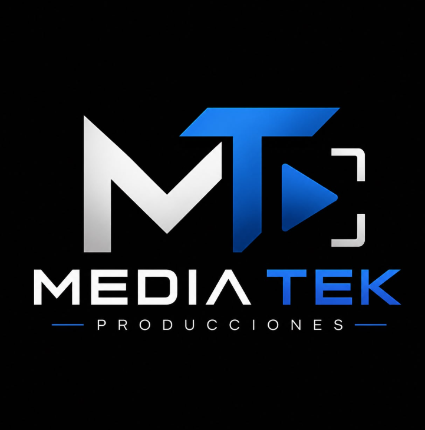

Preproducción
Construimos y desarrollamos las ideas, esto le da claridad a nuestro rumbo.

PRODUCTORA AUDIOVISUAL
Creamos fotografías y producciones audiovisuales con el propósito de transmitir emociones, mensajes y reflexiones.
QUIÉNES SOMOS
Somos una productora audiovisual dedicada a la creación de fotografías, cortometrajes y producciones visuales. Nuestro objetivo es convertir conceptos e ideas en piezas audiovisuales capaces de transmitir emociones, mensajes y experiencias.
PROCESO CREATIVO
Construimos y desarrollamos las ideas, esto le da claridad a nuestro rumbo.

Llegamos a la acción de filmar y capturar las historias que queremos contar.

Editamos, corregimos y transformamos las imágenes y sonidos para presentar un excelente producto a los espectadores.
¿TIENES UNA IDEA?